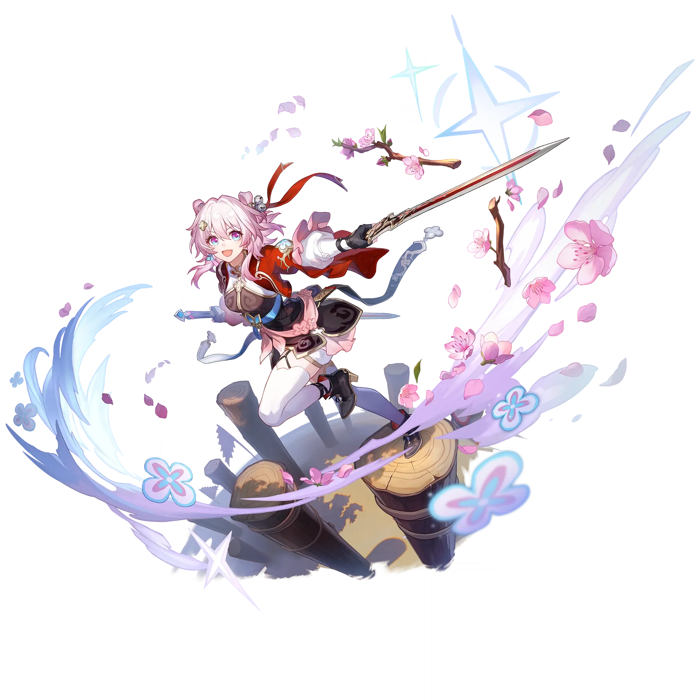

March 7th • The Hunt
Best March 7th • The Hunt build guide for Honkai Star Rail. See March 7th • The Hunt's best Relics, Light Cones, teams, Eidolons, Trace priority, and how to play March 7th • The Hunt.
🔍 Detail Skill
Semua skill aktif dan pasif beserta efeknya.
Deals Imaginary DMG equal to #1[i]% of March 7th's ATK to a single enemy and gains 1 point(s) of Charge.
Initially, deals 3 hits, each causing Imaginary DMG equal to #1[i]% of March 7th's ATK to a single target enemy. After dealing the final hit, there is a 60% fixed chance to deal 1 extra hit, up to a max of 3 extra hit(s). Energy regenerated from using Enhanced Basic ATK does not increase with the number of hits. Enhanced Basic ATK cannot recover Skill Points.
Designates a single ally (excluding this unit) as Shifu and increases Shifu's SPD by #1[i]%. Only the most recent target of March 7th's Skill is considered as Shifu. When using Basic ATK or dealing 1 hit of Enhanced Basic ATK's DMG, triggers the corresponding effect based on the specific Path of Shifu: Erudition, Destruction, The Hunt, Remembrance: Deals Additional DMG (DMG Type based on Shifu's C
After Shifu uses an attack or Ultimate, March 7th gains up to 1 point of Charge each time. Upon reaching 7 or more points of Charge, March 7th immediately takes action and increases the DMG she deals by #1[i]%. Her Basic ATK gets Enhanced, and her Skill cannot be used. After using Enhanced Basic ATK, consumes 7 point(s) of Charge. Charge is capped at 10 points.
If March 7th is on the team, she gains 1 point of Charge at the start of the next battle whenever an ally uses Technique, up to a max of 3 point(s). After using Technique, March 7th regenerates 30 Energy when the next battle starts.
⚔ Light Cone Terbaik
Diurutkan dari yang paling kuat. Persentase menunjukkan performa relatif terhadap pilihan terbaik.
💎 Relic Set Terbaik
Set terbaik untuk karakter ini, diurutkan berdasarkan prioritas.
📊 Stat Utama
Stat yang dicari pada tiap slot.
👥 Tim yang Direkomendasikan
Karakter yang sering dipasangkan bersama March 7th • The Hunt.
 The Dahlia
The Dahlia
 Gallagher
Gallagher
 Trailblazer • Harmony
Trailblazer • Harmony
 Robin
Robin
🔗 Lanjutkan
Build ini dirangkum dari Prydwen Institute. Starwise tidak menghitung sendiri. Angka bisa berubah setelah patch atau karakter baru rilis.